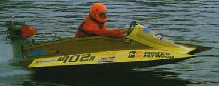

Noah's Ark: Too Big for Timber?
Home
Menu
Noah's Ark: Too Big for Timber?
Home
Menu
Noah's Ark: Too Big for Timber?
Home
Menu
TIM LOVETT MAY 2004

|
A TIMBER HULL WOULD FLEX AND LEAK Timber is not strong enough to build a vessel 300 cubits long. The late 1800's saw shorter ships fail even with iron bracing. |

|
TIMBER CAN DO THE JOB Timber can do the job if it is thick enough and cohesive. Suitable hull design can significantly increase the feasible scale. |
 Timber is too weak
Timber is too weak
This is a popular objection. It is true that steel is superior to timber for hull construction, so steel wins for outright size. However, the size limit of timber hulls of the 1800's is a specific one, related to a particular design and outcome. Contrary to popular opinion, timber has the mechanical properties to compete with modern advanced materials when used the right way.
|
 |
"Yamato" 400 cc Racing Class speedboats were once built from fibreglass. Then they discovered plywood... Now, because it is stronger, lighter and easier to repair than other materials all the boats in this class have plywood hulls. (NSW Australia) |
Clearly timber is strong enough if the structure is suitably thick. This thickness is not too hard to guesstimate either - wood is generally 5-10% as strong as steel, although more difficult to join (can't weld it) See Joining Large Timbers.
A team of Korean naval architects and structural engineers at the world class KRISO facility assessed the ark's proportions for structural feasibility and seakeeping behaviour. (Ref 1). They concluded a 300mm hull wall and 400mm internal structure would make a structure adequate in waves up to 30m (specific wave height). Modern wave data is limited to a maximum of around 11-15m since waves beyond this size are too rare. They say wood is strong enough.
 Shipbuilders
in the 1800's couldn't do it
Shipbuilders
in the 1800's couldn't do it
What about timber ships shorter than Noah's Ark that flexed badly despite reinforcing straps of iron? The insertion of steel straps top brace the frames against racking was certainly effective in reducing hogging and sagging flexure, but it is more a modification than a top down design decision. The flex of the hull had been shearing the seal between planks. These ships were simply a scaled-up version of the traditional Western timber hull design, which reached a structural limit well short of the ark. But the difficulties experienced with oversized tall ships does not prove that hulls the size of Noah's Ark cannot succeed in timber. Even the method of reinforcing with iron straps is not necessarily the most effective solution for a long hull, the points of attachment between iron and wood become a new problem in this modification.
However, even this more extreme option would still be valid, the Bible clearly indicates forged iron and bronze technology were established well before Noah. Ancient civilizations such as the early Egyptians attest to early metalworking and casting skills. But even if Noah's use of metal was restricted to spikes and some joint straps, fundamental design changes may be all that is needed to succeed in timber. It may even be possible to design a workable ark entirely of wood if such a limitation were necessary. Low-tech ideas such as monocoque hull design (tubular structure), layered planking and compartmentalized interior, even the ancient idea of strake edge jointing (ignored by the later Europeans) could combine to give a feasible hull of 150m or so. Work is currently underway to see just how far these design factors could take it.
 The
ark is too big
The
ark is too big
The ark was 300 cubits from bow to stern. Here it is in black and white; 

 (three)
(three) 

 (hundred)
(cubits). Genesis 6:15 This represents a length of around 150m, give or take
5%. At the very outside 150m +/- 10%.
(hundred)
(cubits). Genesis 6:15 This represents a length of around 150m, give or take
5%. At the very outside 150m +/- 10%.
|
The cubit was a popular ancient unit of measure representing the length of the forearm - from elbow to fingertip. Stature varies, so it seems natural that there were different lengths assigned to the cubit. But this is where the story gets interesting. If Noah really did work in cubits, what would his descendents be using? Cubits of similar lengths. It is no rude shock for the Bible believer that early Egypt used a cubit very similar to Mesopotamia's Babylon. Surprise surprise for the evolutionist, the oversize Royal Egyptian cubit doesn't seem to match any pharaoh yet uncovered. No problem, the ancient scribes were exaggerating again - just like they were with the Ptolemy IV trireme, or the Cheng Ho treasure ships. Perhaps the allegations of exaggeration are a little exaggerated. |
Is 150m big? Yes and no. For a timber vessel it is big, but by today's standards it is a standard cargo vessel. A comparison of the ark with various ships shows it is well short of the modern super-tanker, but hovering a little over the records set by timber ships. Noah's ark is big, but not too big.
See also The Large Ships of Antiquity. Larry Pierce. http://www.answersingenesis.org/creation/v22/i3/ships.asp
|
|
Somewhere around Genesis 6:15 the Young-Earth-Creationist bible believing fundamentalist breathes a sigh of relief. That was pretty daring of Moses to include testable dimensions in the Noah story. Fortunately the numbers aren't out by orders of magnitude. In fact they aren't out at all, they're very good. That's the conclusion of the Korean study (1) that assessed variations in length, breadth and depth to see if they could improve the ark. Yet another disappointment for Bible attackers, the mythical ark has ideal proportions. The Gilgamesh origin theory is full of holes, with no explanation for the vastly superior Biblical ark. Moses the naval architect perhaps? |
 The
Flood was too rough
The
Flood was too rough
It is the surface of the water that affects the ark, so deep sea tsunamis,
turbulent layers of sediment and high currents are not necessarily difficult to
ride out. In fact the word used in Genesis 7:18 
Therefore calculations showing an ark that handles a modern sea are a valid test for the Biblical ark, so it will be interesting to see what happens as we work through it. But to really believe the Noah account is fictional one must overlook the surprisingly good numbers 300 x 50 x 30, far too maritime savvy for a mythical story supposedly derived from the Gilgamesh cube, and copied down by an ex-prince of Egypt. On top of this, there is an additional fluke that the length is hovering around the timber limit.
References:
1. Safety Investigation of Noah’s Ark in a Seaway: S.W. Hong, S.S. Na, B.S. Hyun, S.Y. Hong, D.S. Gong, K.J. Kang, S.H. Suh, K.H. Lee, and Y.G. Je. First published in: Creation Ex Nihilo Technical Journal 8(1):26–35, 1994. http://www.answersingenesis.org/home/area/Magazines/tj/docs/v8n1_ArkSafety.asp . Dr Seon Hong is principal researcher at KORDI (prev KRISO), http://www.kriso.re.kr/ Prof Na is structural engineering professor at Mokpo University.